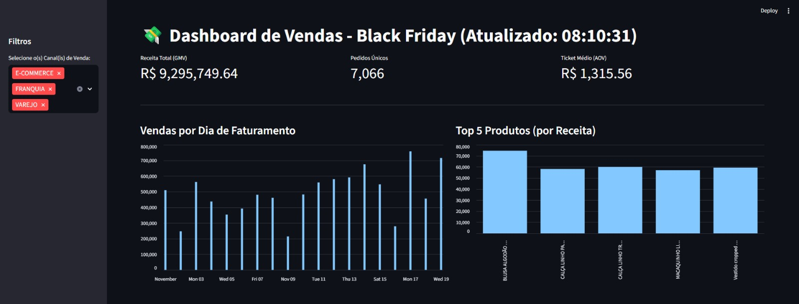

Projetos Pessoais
1. Acompanhamento de Vendas (Python)
Projeto focado em acompanhar as vendas parciais usando Streamlit e Pandas (Python).
Visualização de Resultados:
Trecho de Código Python:
df = carregar_dados()
st.title(f"💸 Dashboard de Vendas - Black Friday (Atualizado: {pd.Timestamp.now().strftime('%H:%M:%S')})")
if df.empty:
st.warning("Nenhum dado encontrado para o período.")
else:
st.sidebar.header("Filtros")
opcoes_canal = sorted(df['FILIAL_VENDA_CANAL'].unique())
selecao_canal = st.sidebar.multiselect(
"Selecione o(s) Canal(is) de Venda:",
options=opcoes_canal,
default=opcoes_canal
)
df_filtrado = df[df['FILIAL_VENDA_CANAL'].isin(selecao_canal)]
# -----------------------------------------------
kpi1, kpi2, kpi3 = st.columns(3)
gmv = df_filtrado['VALOR_TOTAL'].sum()
total_pedidos = df_filtrado['ID_PEDIDO'].nunique()
ticket_medio = gmv / total_pedidos if total_pedidos > 0 else 0
kpi1.metric(
label="Receita Total (GMV)",
value=f"R$ {gmv:,.2f}"
)
kpi2.metric(
label="Pedidos Únicos",
value=f"{total_pedidos:,}"
)
kpi3.metric(
label="Ticket Médio (AOV)",
value=f"R$ {ticket_medio:,.2f}"
)
st.markdown("---")
col1, col2 = st.columns(2)
with col1:
st.subheader("Vendas por Dia de Faturamento")
vendas_dia = df_filtrado.groupby('DATA_FATURAMENTO')['VALOR_TOTAL'].sum().reset_index()
st.bar_chart(vendas_dia.set_index('DATA_FATURAMENTO'))
with col2:
st.subheader("Top 5 Produtos (por Receita)")
top_produtos = df_filtrado.groupby('DESC_PRODUTO')['VALOR_TOTAL'].sum().nlargest(5).sort_values(ascending=True)
st.bar_chart(top_produtos)
st.subheader("Visão Detalhada dos Itens Faturados")
st.dataframe(df_filtrado.sort_values('DATA_FATURAMENTO', ascending=False).head(20))
2. Simulação de Distribuição de Produtos (SQL)
A procedure simula uma distribuição de produtos para clientes de acordo com suas prioridades pré-definidas.
Trecho de Código SQL:
-- Trecho onde acontece o loop e realiza a simulação
BEGIN
SELECT @EstoqueD1=0, @EstoqueD2=0, @EstoqueD3=0, @EstoqueD4=0, @EstoqueD5=0, @EstoqueD6=0;
SELECT
@EstoqueD1 = ISNULL(D1, 0), @EstoqueD2 = ISNULL(D2, 0), @EstoqueD3 = ISNULL(D3, 0),
@EstoqueD4 = ISNULL(D4, 0), @EstoqueD5 = ISNULL(D5, 0), @EstoqueD6 = ISNULL(D6, 0)
FROM #EstoqueTemp
WHERE ID_PRODUTO = @IdProduto;
SET @AlocadoP1 = CASE WHEN @VE1 < @EstoqueD1 THEN @VE1 ELSE @EstoqueD1 END;
SET @AlocadoP2 = CASE WHEN @VE2 < @EstoqueD2 THEN @VE2 ELSE @EstoqueD2 END;
SET @AlocadoP3 = CASE WHEN @VE3 < @EstoqueD3 THEN @VE3 ELSE @EstoqueD3 END;
SET @AlocadoP4 = CASE WHEN @VE4 < @EstoqueD4 THEN @VE4 ELSE @EstoqueD4 END;
SET @AlocadoP5 = CASE WHEN @VE5 < @EstoqueD5 THEN @VE5 ELSE @EstoqueD5 END;
SET @AlocadoP6 = CASE WHEN @VE6 < @EstoqueD6 THEN @VE6 ELSE @EstoqueD6 END;
IF (@AlocadoP1 + @AlocadoP2 + @AlocadoP3 + @AlocadoP4 + @AlocadoP5 + @AlocadoP6) > 0
BEGIN
UPDATE #EstoqueTemp
SET
D1 = D1 - @AlocadoP1, D2 = D2 - @AlocadoP2, D3 = D3 - @AlocadoP3,
D4 = D4 - @AlocadoP4, D5 = D5 - @AlocadoP5, D6 = D6 - @AlocadoP6
WHERE ID_PRODUTO = @IdProduto;
END